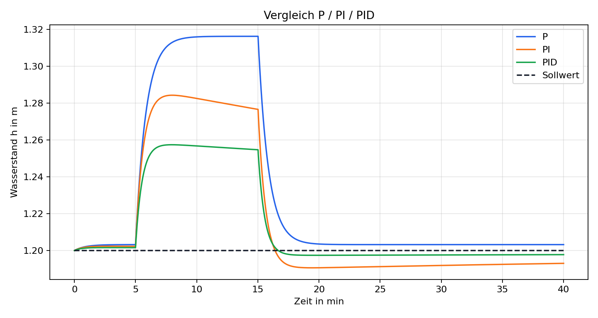
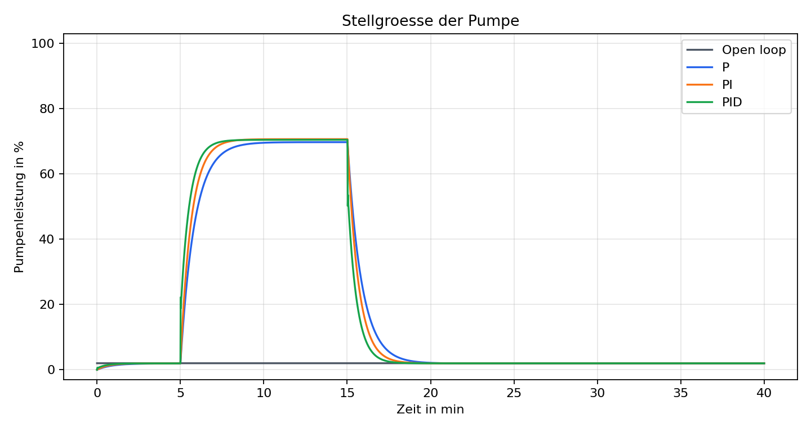

Warum dieses Projekt?
Regelungstechnik als erklaerbares Infrastrukturmodell
Realistischer Kontext
Das Modell steht fuer Pumpensuempfe, Rueckhaltebecken und kleine Speicheranlagen in kommunaler Infrastruktur.
Saubere Regelung
Der PID-Regler nutzt P-, I- und D-Anteil, Stellgroessenbegrenzung und Anti-Windup fuer den I-Anteil.
Portfolio-tauglich
Quellcode, Tests, README, Ergebnisse und diese Pages-Seite zeigen das Projekt als nachvollziehbare Arbeit.
Arbeitsweise
Vom Modell zur Bewertung
Tank modellieren
Wasserstand, Zufluss, freier Ablauf und Pumpenabfluss werden als diskretes Zustandsmodell simuliert.
Regler vergleichen
Open Loop, P, PI und PID laufen im gleichen Regenereignis und werden direkt miteinander verglichen.
Kennwerte auswerten
Ueberschwingen, Einschwingzeit, stationaerer Fehler und Pumpenenergie landen reproduzierbar in einer CSV.
Projektmodule
Die wichtigsten Bausteine im Repository
01
Tankmodell
Physikalische Parameter, Ablauf, Pumpenfluss und Euler-Schritt.
02
PID-Regler
Diskreter Regler mit Anti-Windup und Stellgroessenbegrenzung.
03
Simulation
Gemeinsame Simulationsschleife fuer Open Loop, P, PI und PID.
04
Metriken
Ueberschwingen, Einschwingzeit, Fehler und Energieverbrauch.
05
Visualisierung
Matplotlib-Plots fuer Wasserstand, Pumpe, Zufluss und Vergleich.
06
Tests
pytest-Abdeckung fuer Regler, Tankgrenzen und Ergebnisarrays.
Simulationsergebnis
PID reduziert das Ueberschwingen sichtbar
Das Demo-Szenario nutzt einen ploetzlichen Regenzufluss zwischen Minute 5 und Minute 15. Die Visualisierungen werden aus dem Python-Code erzeugt und liegen im Repository unter `results/`.

Vergleich P / PI / PID
Der PID-Regler zeigt in dieser Abstimmung die kleinste maximale Abweichung vom Sollwert.

Pumpenleistung
Die Stellgroesse bleibt auf den Bereich von 0 bis 100 Prozent begrenzt.
Struktur
Sauberer Aufbau im src-Layout
pid-water-level-control/
|- src/water_level_control/
| |- tank_model.py
| |- pid.py
| |- simulation.py
| |- metrics.py
| `- plotting.py
|- examples/run_pid_demo.py
|- tests/
`- docs/